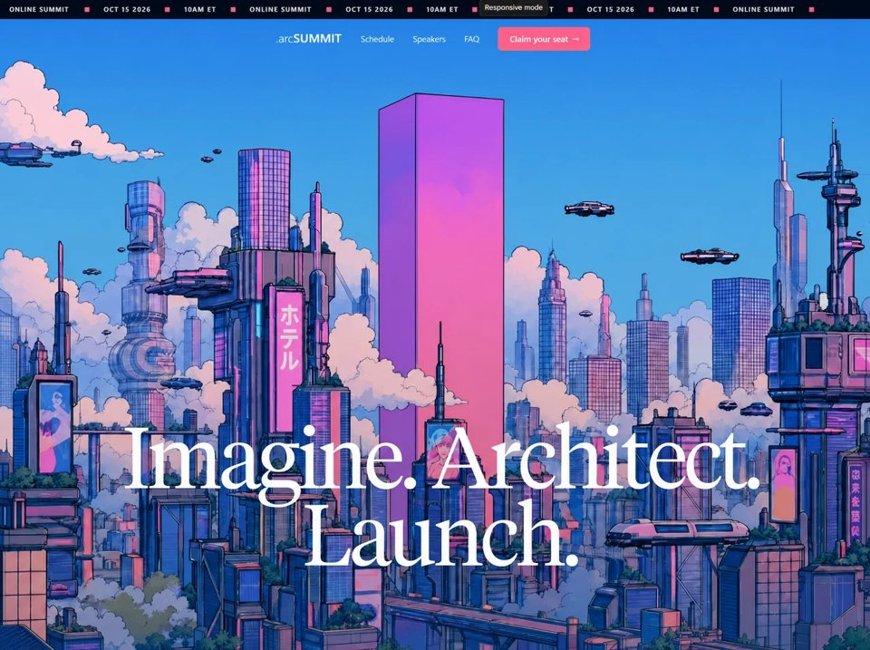

arc Summit
Cyberpunkcyberpunkyilai-ai 公开页面
收录时间：2026-08-28正文：10,053 字符

本地预览图 · jpeg
完整提示词
Build a pixel-accurate ArcSummit 2026 landing page as a Vite + React 18 + TypeScript + Tailwind CSS 3 + Framer Motion app. Recreate the page in one shot. Do not invent extra sections (no schedule, speakers, FAQ content, footer, or forms). Main is only: Navbar + Hero + TextFill.
STACK
- React 18, TypeScript, Vite, Tailwind 3, framer-motion
- Default Tailwind theme (no custom theme tokens)
- html { scroll-behavior: auto } (NOT smooth)
- body { margin:0; padding:0; background:#000; -webkit-font-smoothing:antialiased; -moz-osx-font-smoothing:grayscale }
- <main className="bg-black"> wrapping all sections
FONT (exact)
- Load in index.html:
<link href="https://db.onlinewebfonts.com/c/e4b6f66c5987eea12c8847782bc851f6?family=Tiempos+Headline+Light" rel="stylesheet">
- Display headlines use: fontFamily: '"Tiempos Headline Light", Georgia, serif'
- UI/nav uses system sans (Tailwind default)
COLORS (exact)
- Page/black: #000 and #01030B
- Pink accent: #F95A99
- Cream text: #E2DBC8
- Ticker bg: #0A0E1A
- Overlay gradient: from-[#01030B] via-[#01030B]/30 via-30% to-transparent
- White / white/80 / white/90 as specified
VIDEO (exact URL, do not change)
https://d8j0ntlcm91z4.cloudfront.net/user_38xzZboKViGWJOttwIXH07lWA1P/hf_20260822_105935_4eac3aac-4376-4cab-b992-6e61309d035f.mp4
══════════════════════════════════════
1) NAVBAR — fixed top-0 left-0 right-0 z-[60]
══════════════════════════════════════
A) TICKER (full width, overflow-hidden)
- bg #0A0E1A
- py-1.5 sm:py-2
- text-[10px] sm:text-[11px] font-medium tracking-[0.15em] uppercase text-white/90
- Inner row: flex w-max, animated via rAF (NOT CSS marquee)
- Duplicate the same content block 8 times so it can loop
- Each content block:
flex items-center gap-6 whitespace-nowrap px-3
items: "OCT 15 2026" · pink square · "10AM ET" · pink square · "ONLINE SUMMIT" · pink square · then the same trio again
pink squares: w-1.5 h-1.5 sm:w-2 sm:h-2 bg-[#F95A99] inline-block flex-shrink-0
- Animation logic (exact):
let offset = 0
each rAF: offset -= 0.5
when abs(offset) >= firstElementChild.offsetWidth, reset offset = 0
ticker.style.transform = `translateX(${offset}px)`
cancel rAF on unmount
B) NAV ROW
- flex items-center justify-center gap-8 px-4 sm:px-6 md:px-10 py-3
- Logo (z-[60]): flex items-center gap-0.5 text-white text-lg md:text-xl font-light tracking-tight
pink "." (text-[#F95A99] font-normal) then "arc" (font-light) then "SUMMIT" (font-semibold tracking-wide)
- Desktop (hidden md:flex items-center gap-8):
links Schedule #schedule, Speakers #speakers, FAQ #faq
text-sm text-white/80 hover:text-white transition-colors
CTA: "Claim your seat →"
inline-flex items-center gap-1.5 px-5 py-2.5 rounded-md text-sm font-medium text-white
bg #F95A99, hover:scale-105 transition-transform
- Mobile hamburger (md:hidden): 10×10 button, 6×5 icon, 3 white 2px bars
Framer Motion:
top bar: menuOpen ? { rotate:45, y:8 } : { rotate:0, y:0 } duration 0.3 ease [0.4,0,0.2,1]
mid: menuOpen ? { opacity:0, scaleX:0 } : { opacity:1, scaleX:1 } duration 0.2 easeInOut
bottom: menuOpen ? { rotate:-45, y:-8 } : { rotate:0, y:0 } duration 0.3 ease [0.4,0,0.2,1]
bars: absolute, h-0.5 bg-white rounded-full origin-center; mid at top-[8px]
C) MOBILE OVERLAY (md:hidden, z-[55], AnimatePresence)
- When open: document.body.style.overflow = 'hidden' (restore on close/unmount)
- Full-screen bg #01030B, opacity 0→1 duration 0.3 ease [0.4,0,0.2,1]
- Centered column gap-1 px-6
- Links text-3xl sm:text-4xl font-light text-white/90 hover:text-white py-4
each: initial {opacity:0,y:20} animate {opacity:1,y:0} exit {opacity:0,y:10}
duration 0.35, delay 0.1 + i*0.07, ease [0.4,0,0.2,1]
- CTA "Claim your seat →" mt-8 px-8 py-4 rounded-lg text-lg bg #F95A99 hover:scale-105
same motion, delay 0.1 + navLinks.length*0.07
══════════════════════════════════════
2) HERO — scroll-scrubbed video + sticky headline
══════════════════════════════════════
Section: relative w-full, height 140vh (inline style)
LAYER 1 — video background (absolute inset-0 overflow-hidden)
- <video> src = EXACT CloudFront URL above
muted playsInline preload="auto"
class: w-auto h-full min-w-full object-cover
style height: 140vh
- <canvas> stacked absolute inset-0, same size classes
opacity-0 initially, transition-opacity duration-300
style height: 140vh
- Overlay: absolute inset-0 bg-gradient-to-t from-[#01030B] via-[#01030B]/30 via-30% to-transparent
LAYER 2 — sticky heading (relative z-10 flex flex-col, height 140vh)
- flex-1 spacer on top so the heading sits at the bottom
- sticky bottom-0 pb-12 md:pb-20 px-6 md:px-16 pointer-events-none
- h1: text-white text-center leading-[0.9] tracking-tight
font: "Tiempos Headline Light", Georgia, serif
fontSize: clamp(3rem, 10vw, 10rem)
copy exactly:
Imagine. Architect.
Launch.
(line break after Architect.)
SCROLL-VIDEO LOGIC (must match this, not CSS playback)
Goal: as the user scrolls through the 140vh section, the video frame matches scroll progress 0→1. Prefer pre-extracted ImageBitmaps on canvas for buttery scrubbing; fall back to video.currentTime seeking until extraction finishes.
Refs: sectionRef, canvasRef, videoRef, framesRef: ImageBitmap[], drawnIndex=-1, readyRef=false
On mount:
1. canvas 2d context: { alpha:false, desynchronized:true }
2. video.pause() always — never autoplay
3. getProgress():
rect = section.getBoundingClientRect()
scrollableDistance = section.offsetHeight - window.innerHeight
scrolled = -rect.top
return clamp(scrolled / scrollableDistance, 0, 1)
4. rAF loop always running:
IF frames ready: drawFrame()
ELSE (fallback scrub):
if progress changed AND video.duration is valid:
target = progress * duration
if !seeking AND abs(video.currentTime - target) > 0.02:
seeking = true; video.currentTime = target
on 'seeked': seeking = false
5. drawFrame():
index = min(round(progress * (frames.length-1)), frames.length-1)
only draw if index !== last drawn
ctx.drawImage(frames[index], 0, 0, canvas.width, canvas.height)
6. extractFrames() async (exact):
fetch(VIDEO_URL) → blob → object URL
create a hidden extractor <video> muted playsInline preload=auto
wait onloadeddata
fps = 30; totalFrames = ceil(duration * 30); step = duration / totalFrames
canvas.width = extractor.videoWidth || 1920
canvas.height = extractor.videoHeight || 1080
OffscreenCanvas same size, 2d { alpha:false }
for i = 0..totalFrames:
extractor.currentTime = i * step
await onseeked
offCtx.drawImage(extractor, 0, 0, w, h)
frames.push(await createImageBitmap(offscreen))
store frames, readyRef=true, revoke object URL
hide the visible <video> (display:none)
canvas.style.opacity = '1'
drawFrame()
on failure: console.warn and keep video-seek fallback
Cleanup: cancel rAF, remove seeked listener.
This produces: video frozen at frame 0 at top; as you scroll the 140vh section, frames advance smoothly; at the bottom of the hero (progress=1) last frame is shown. Heading stays stuck to the bottom of the viewport while the tall section scrolls.
══════════════════════════════════════
3) TEXT FILL SECTION
══════════════════════════════════════
Section: relative h-[200vh] w-full backgroundColor #01030B
Sticky inner: sticky top-0 h-screen w-full flex flex-col items-center justify-center
padding: px-5 sm:px-8 md:px-16 lg:px-24
Meta row above paragraph:
flex items-center gap-2 sm:gap-3 mb-8 sm:mb-12
text-[10px] sm:text-xs md:text-sm tracking-[0.2em] uppercase text-[#E2DBC8]/80
"Oct 15 2026" · 8px pink square (w-2 h-2 bg-[#F95A99]) · "10AM ET" · square · "Online Summit"
Paragraph:
text-center text-xl leading-snug tracking-tight
sm:text-2xl md:text-4xl lg:text-5xl xl:text-[3.2rem] lg:leading-[1.2]
max-w-5xl
font: "Tiempos Headline Light", Georgia, serif
EXACT copy (em dash and apostrophes as Unicode):
AI delivers real value when every team can adopt it — securely. ArcSummit 2026 lays out the path: wire intelligent agents into the tools you already depend on, convert your highest-friction processes into autonomous ones, and manage it all from one dashboard. Whether you’re exploring your first use case or deploying across the organization, you’ll walk away with hands-on labs, proven frameworks, and talks you can apply the same day.
Letter-fill animation (framer-motion):
- useScroll({ target: containerRef, offset: ['start 0.8', 'end 0.2'] })
- Split into words; each word is inline-block whitespace-nowrap so words don’t break
- Each character:
invisible font-normal spacer span (nbsp for spaces)
absolute inset-0 motion.span font-normal text-[#E2DBC8]
opacity = useTransform(scrollYProgress, [start, end], [0.3, 1])
start = index / totalChars
end = min(1, charProgress + 0.005)
- Letters start at 30% opacity cream and fill to 100% left-to-right as you scroll the 200vh section
CTA below:
mt-8 sm:mt-14
"Reserve your seat →"
inline-flex items-center gap-2 px-6 sm:px-8 py-3 sm:py-4 rounded-lg
text-white font-medium text-sm sm:text-base md:text-lg
bg #F95A99 hover:scale-105 transition-transform
href="#"
══════════════════════════════════════
RESPONSIVE CHECKLIST
══════════════════════════════════════
- Mobile: hamburger + overlay; ticker smaller type/padding; hero h1 clamp; heading pb-12 px-6; text section smaller type and paddings; pink dots in ticker shrink to 6px
- md+: desktop nav + CTA; heading pb-20 px-16; hamburger hidden
- lg/xl: body copy scales up to 3.2rem / leading 1.2
- Video always object-cover, min-w-full, never letterboxed
- Overlay menu only md:hidden
Do not add extra features. Match spacing, type, colors, ticker speed (0.5px/frame), video URL, 140vh hero, 200vh text section, canvas frame extraction at 30fps with seek fallback, and sticky headline at the bottom of the hero.把上面的提示词完整复制到支持长文本的 AI 工具中，再按需要替换品牌名、配色与文案。提示词描述的是整页结构与动效节奏，生成后建议在真实浏览器里检查首屏加载和移动端表现。
来源与版权
该条目来自公开提示词页面，原始出处信息未随页面提供。
提示词文本与预览素材的版权归原作者或原平台所有，本站仅作索引与归档。若你是权利人并希望移除本条内容，请通过联系方式告知。
同分类提示词
暂无同分类条目。